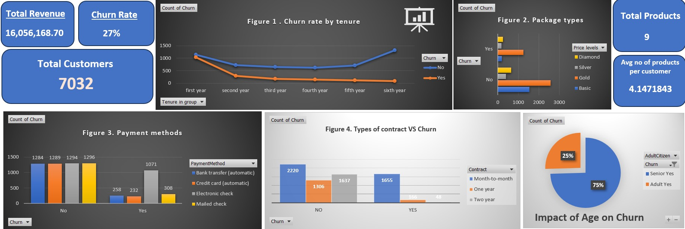

Dashboard
The Screenshot from my Excel dashboard reevls the insight information of data set. Before detail exploration of each graph, there were lots of data transformation work including cleaning, dropping , renaming and adding new columns.
As of major transformation among them, I groupped Tenure into more managable struture and transforming Price Level column into 4 different easy-to-identify packages.